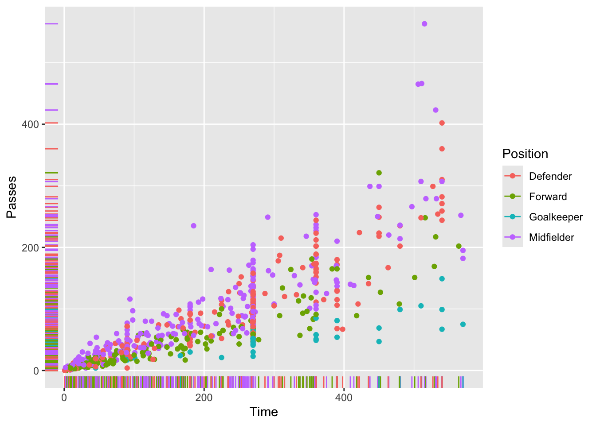
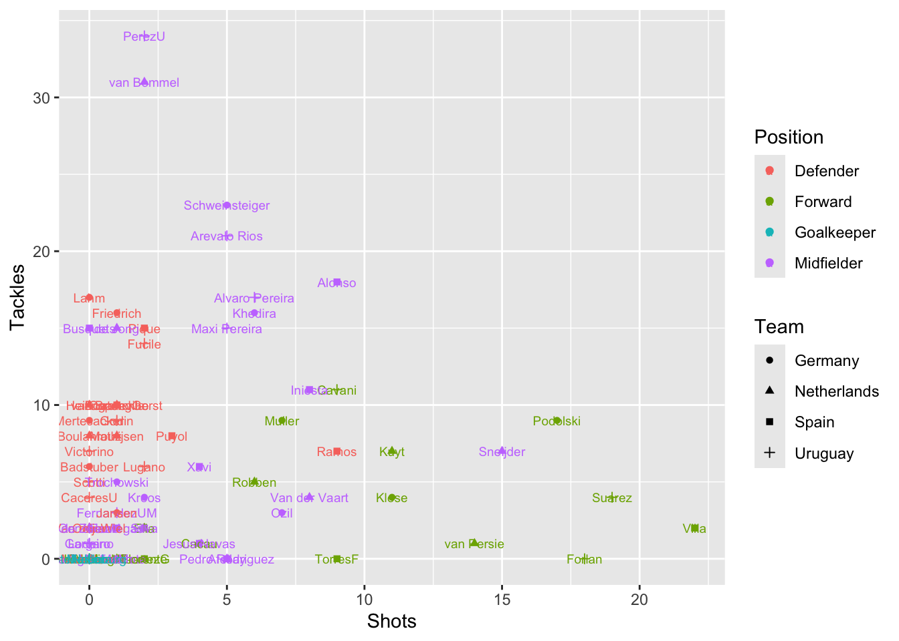
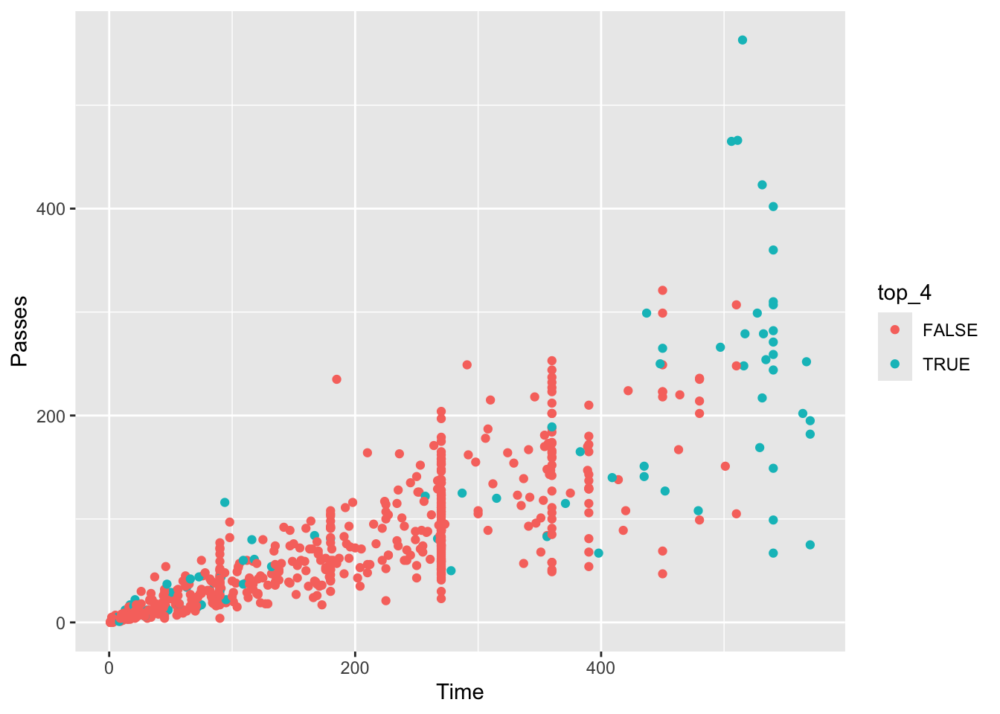
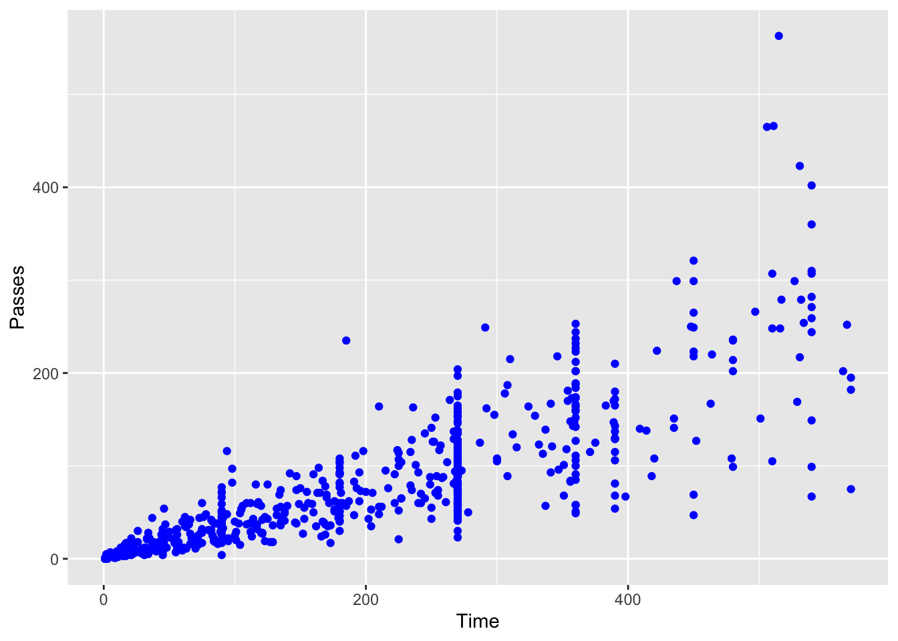
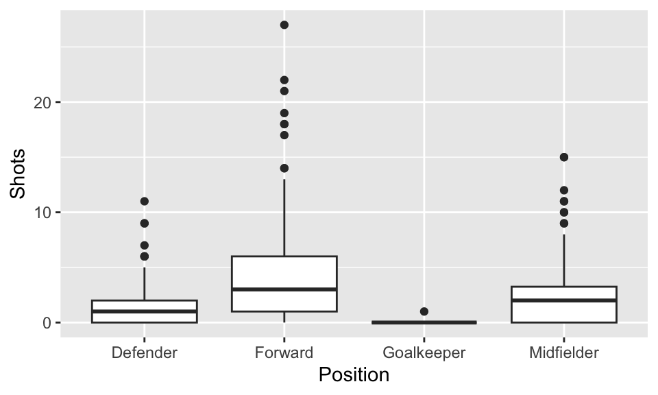

Chapter 3 Exploring data #1
Download a pdf of the lecture slides covering this topic.
3.1 Objectives
After this chapter, you should (know / understand / be able to ):
- Be able to load and use datasets from R packages
- Be able to describe and use logical vectors
- Understand how logical vectors check logical statements against other R vector(s) and store TRUE / FALSE values as 0 / 1 at a deeper level
- Be able to use the
dplyrfunctionmutateto create a logical vector as a new column in a dataframe and thedplyrfunctionfilterwith that new column to filter a dataframe to a subset of rows - Be able to use the bang operator (!) to reverse a logical vector
- Know what the “tidyverse” is and name some of its packages
- Be able to use some simple statistical functions (e.g.,
min,max,mean,median,cor,summary), including how to handle missing values when using these - Be able to use the
dplyrfunctionsummarizeto summarize data, with and without grouping usinggroup_by, including with special functionsn,n_distinct,first, andlast - Understand the three basic elements of
ggplotplots: data, aesthetics, and geoms - Be able to create a
ggplotobject, set its data usingdata = ...and its aesthetics usingmapping = aes(...), and add on layers (includinggeoms) with+ - Be able to create some basic plots (e.g., scatterplots, boxplots, histograms) using
ggplot2functions - Understand the difference between setting an aesthetic by mapping it to a column of the dataframe versus setting it to a constant value
- Understand the difference between “statistical” geoms (e.g., histograms, boxplots) and geoms that add one geom element per dataframe observation (row)
3.2 Data from a package
So far we’ve covered two ways to get data into R:
- From flat files (either on your computer or online)
- From binary file formats like SAS and Excel.
Many R packages come with their own data, which is very easy to load and use. For example, the faraway package, which complements Julian Faraway’s book Linear Models with R, has a dataset called worldcup that I’ll use for some examples and that you’ll use for part of this week’s in-course exercise. To load this dataset, first load the package with the data (faraway) and then use the data() function with the dataset name (“worldcup”) as the argument to the data function:
Unlike most data objects you’ll work with, datasets that are part of an R package will often have their own help files. You can access this help file for a dataset using the ? operator with the dataset’s name:
This helpful will usually include information about the size of the dataset, as well as definitions for each of the columns.
To get a list of all of the datasets that are available in the packages you currently have loaded, run data() without an option inside the parentheses:
If you run the library function without any arguments—library()—it works in a similar way. R will open a list of all the R packages that you have installed on your computer and can open with a library call.
For this chapter, we’ll be working with a modified version of the nepali dataset from the faraway package. This gives data from a study of the health of a group of Nepalese children. Each observation is a single measurement for a child; there can be multiple observations per child. We’ll use a modified version of this dataframe that limits it to the columns with the child’s id, sex, weight, height, and age, and limited to each child’s first measurement. To create this modified dataset, run the following code:
library(dplyr)
library(faraway)
data(nepali)
nepali <- nepali %>%
# Limit to certain columns
select(id, sex, wt, ht, age) %>%
# Convert id and sex to factors
mutate(id = factor(id),
sex = factor(sex, levels = c(1, 2),
labels = c("Male", "Female"))) %>%
# Limit to first obs. per child
distinct(id, .keep_all = TRUE)The first few rows of the data should now look like:
## id sex wt ht age
## 1 120011 Male 12.8 91.2 41
## 2 120012 Female 14.9 103.9 57
## 3 120021 Female 7.7 70.1 8
## 4 120022 Female 12.1 86.4 353.3 Logical vectors
Last week, you learned a lot about logical statements and how to use them with the filter function from the dplyr package. You can also use logical vectors, created with these logical statements, for a lot of other things. For example, you can use them directly in the square bracket indexing ([..., ...]) to pull out just the rows of a dataframe that meet a certain condition. For using logical statements in either context, it is helpful to understand a bit more about logical vectors.
When you run a logical statement on a vector, you create a logical vector the same length as the original vector:
## [1] 200## [1] 200The logical vector (nepali$sex == "Male" in this example) will have the value TRUE at any position where the original vector (nepali$sex in this example) met the logical condition you tested, and FALSE anywhere else:
## [1] Male Female Female Female Male Male
## Levels: Male Female## [1] TRUE FALSE FALSE FALSE TRUE TRUEYou can “flip” this logical vector (i.e., change every TRUE to FALSE and vice-versa) using the bang operator, !:
is_male <- nepali$sex == "Male" # Save this logical vector as the object named `is_male`
head(is_male)## [1] TRUE FALSE FALSE FALSE TRUE TRUE## [1] FALSE TRUE TRUE TRUE FALSE FALSEThe bang operator turns out to be very useful. You will often find cases where it’s difficult to write a logical vector to get what you want, but fairly easy to write the inverse (find everything you don’t want). One example is filtering down to non-missing values—the is.na function will return TRUE for any value that is NA, so you can use !is.na() to identify any non-missing values.
You can do a few cool things with a logical vector. For example, you can use it inside a filter function to pull out just the rows of a dataframe where is_male is TRUE:
## id sex wt ht age
## 1 120011 Male 12.8 91.2 41
## 2 120023 Male 14.2 99.4 49
## 3 120031 Male 13.9 96.4 46
## 4 120051 Male 8.3 69.5 8
## 5 120053 Male 15.8 96.0 54
## 6 120062 Male 12.1 89.9 57Or, with !, just the rows where is_male is FALSE:
## id sex wt ht age
## 1 120012 Female 14.9 103.9 57
## 2 120021 Female 7.7 70.1 8
## 3 120022 Female 12.1 86.4 35
## 4 120052 Female 11.8 83.6 32
## 5 120061 Female 8.7 78.5 26
## 6 120082 Female 11.2 79.8 36You can also use sum() and table() with a logical vector to find out how many of the values in the vector are TRUE AND FALSE. You can use sum because R saves logical vectors at a basic level as 0 for FALSE and 1 for TRUE. Therefore, if you add up all the values in a logical vector, you’re adding up the number of observations with the value TRUE.
In the example, you can use these functions to find out how many males and females are in the dataset:
## [1] 107## [1] 93## is_male
## FALSE TRUE
## 93 107Note that you could also achieve the same thing with dplyr functions. For example, you could use mutate with a logical statement to create an is_male column in the nepali dataframe, then group by the new is_male column and count the number of observations in each group using count:
## # A tibble: 2 x 2
## # Groups: is_male [2]
## is_male n
## <lgl> <int>
## 1 FALSE 93
## 2 TRUE 107We will cover using summarize, including with data that has been grouped with group_by, later in this chapter.
3.4 Simple statistics functions
3.4.1 Summary statistics
To explore your data, you’ll need to be able to calculate some simple statistics for vectors, including calculating the mean and range of continuous variables and counting the number of values in each category of a factor or logical vector.
Here are some simple statistics functions you will likely use often:
| Function | Description |
|---|---|
range() |
Range (minimum and maximum) of vector |
min(), max() |
Minimum or maximum of vector |
mean(), median() |
Mean or median of vector |
sd() |
Standard deviation of vector |
table() |
Number of observations per level for a factor vector |
cor() |
Determine correlation(s) between two or more vectors |
summary() |
Summary statistics, depends on class |
All of these functions take, as the main argument, the vector or vectors for which you want the statistic. If there are missing values in the vector, you’ll typically need to add an argument to say what to do with the missing values. The parameter name for this varies by function, but for many of these functions it’s na.rm = TRUE or use="complete.obs".
## [1] 10.18432## [1] 52.4 104.1## [1] 12.64529##
## Male Female
## 107 93Most of these functions take a single vector as the input. The cor function, however, calculates the correlation between vectors and so takes two or more vectors. If you give it multiple values, it will give the correlation matrix for all the vectors.
## [1] 0.9571535## wt ht age
## wt 1.0000000 0.9571535 0.8931195
## ht 0.9571535 1.0000000 0.9287129
## age 0.8931195 0.9287129 1.0000000R supports object-oriented programming. Your first taste of this shows up with the summary function. For the summary function, R does not run the same code every time. Instead, R first checks what type of object was input to summary, and then it runs a function (method) specific to that type of object. For example, if you input a continuous vector, like the ht column in nepali, to summary, the function will return the mean, median, range, and 25th and 75th percentile values:
## Min. 1st Qu. Median Mean 3rd Qu. Max. NA's
## 3.80 7.90 10.10 10.18 12.40 16.70 15However, if you submit a factor vector, like the sex column in nepali, the summary function will return a count of how many elements of the vector are in each factor level (as a note, you could do the same thing with the table function):
## Male Female
## 107 93The summary function can also input other data structures, including dataframes, lists, and special object types, like regression model objects. In each case, it performs different actions specific to the object type. Later in this section, we’ll cover regression models, and see what the summary function returns when it is used with regression model objects.
3.4.2 summarize function
You will often want to use these functions in conjunction with the summarize function in dplyr. For example, to create a new dataframe with the mean weight of children in the nepali dataset, you can use mean inside a summarize function:
## mean_wt
## 1 10.18432There are also some special functions that are particularly useful with summarize and other dplyr functions. For example, the n function will calculate the number of observations and the first function will return the first value of a column:
## n_children first_id
## 1 200 120011See the “summary function” section of the the RStudio Data Wrangling cheatsheet for more examples of these special functions.
Often, you will be more interested in summaries within certain groupings of your data, rather than overall summaries. For example, you may be interested in mean height and weight by sex, rather than across all children, for the nepali data. It is very easy to calculate these grouped summaries using dplyr—you just need to group data using the group_by function (also a dplyr function) before you run the summarize function:
nepali %>%
group_by(sex) %>%
summarize(mean_wt = mean(wt, na.rm = TRUE),
n_children =n(),
first_id = first(id))## `summarise()` ungrouping output (override with `.groups` argument)## # A tibble: 2 x 4
## sex mean_wt n_children first_id
## <fct> <dbl> <int> <fct>
## 1 Male 10.5 107 120011
## 2 Female 9.82 93 120012Don’t forget that you need to save the output to a new object if you want to use it later. The above code, which creates a dataframe with summaries for Nepali children by sex, will only be printed out to your console if run as-is. If you’d like to save this output as an object to use later (for example, for a plot or table), you need to assign it to an R object.
3.5 Plots to explore data
Exploratory data analysis is a key step in data analysis and plotting your data in different ways is an important part of this process. In this section, I will focus on the basics of ggplot2 plotting, to get you started creating some plots to explore your data.
This section will focus on making useful, rather than attractive graphs, since at this stage we are focusing on exploring data for yourself rather than presenting results to others. Next week, I will explain more about how you can customize ggplot objects, to help you make plots to communicate with others.
All of the plots we’ll make today will use the ggplot2 package (another member of the tidyverse!). If you don’t already have that installed, you’ll need to install it. You then need to load the package in your current session of R:
# install.packages("ggplot2") ## Uncomment and run if you don't have `ggplot2` installed
library(ggplot2)The process of creating a plot using ggplot2 follows conventions that are a bit different than most of the code you’ve seen so far in R (although it is somewhat similar to the idea of piping I introduced in the last chapter). The basic steps behind creating a plot with ggplot2 are:
- Create an object of the
ggplotclass, typically specifying the data and some or all of the aesthetics; - Add on geoms and other elements to create and customize the plot, using
+.
You can add on one or many geoms and other elements to create plots that range from very simple to very customized. This week, we’ll focus on simple geoms and added elements, and then explore more detailed customization next week.
If R gets to the end of a line and there is not some indication that the call is not over (e.g., %>% for piping or + for ggplot2 plots), R interprets that as a message to run the call without reading in further code. A common error when writing ggplot2 code is to put the + to add a geom or element at the beginning of a line rather than the end of a previous line– in this case, R will try to execute the call too soon. To avoid errors, be sure to end lines with +, don’t start lines with it.
3.5.1 Initializing a ggplot object
The first step in creating a plot using ggplot2 is to create a ggplot object. This object will not, by itself, create a plot with anything in it. Instead, it typically specifies the data frame you want to use and which aesthetics will be mapped to certain columns of that data frame (aesthetics are explained more in the next subsection).
Use the following conventions to initialize a ggplot object:
The data frame is the first parameter in a ggplot call and, if you like, you can use the parameter definition with that call (e.g., data = dataframe). Aesthetics are defined within an aes function call that typically is used within the ggplot call.
While the ggplot call is the place where you will most often see an aes call, aes can also be used within the calls to add specific geoms. This can be particularly useful if you want to map aesthetics differently for different geoms in your plot. We’ll see some examples of this use of aes more in later sections, when we talk about customizing plots. The data parameter can also be used in geom calls, to use a different data frame from the one defined when creating the original ggplot object, although this tends to be less common.
3.5.2 Plot aesthetics
Aesthetics are properties of the plot that can show certain elements of the data. For example, in Figure 3.1, color shows (is mapped to) gender, x-position shows height, and y-position shows weight in a sample data set of measurements of children in Nepal.
Figure 3.1: Example of how different properties of a plot can show different elements to the data. Here, color indicates gender, position along the x-axis shows height, and position along the y-axis shows weight. This example is a subset of data from the nepali dataset in the faraway package.
Any of these aesthetics could also be given a constant value, instead of being mapped to an element of the data. For example, all the points could be red, instead of showing gender.
Which aesthetics are required for a plot depend on which geoms (more on those in a second) you’re adding to the plot. You can find out the aesthetics you can use for a geom in the “Aesthetics” section of the geom’s help file (e.g., ?geom_point). Required aesthetics are in bold in this section of the help file and optional ones are not. Common plot aesthetics you might want to specify include:
| Code | Description |
|---|---|
x |
Position on x-axis |
y |
Position on y-axis |
shape |
Shape |
color |
Color of border of elements |
fill |
Color of inside of elements |
size |
Size |
alpha |
Transparency (1: opaque; 0: transparent) |
linetype |
Type of line (e.g., solid, dashed) |
3.5.3 Adding geoms
Next, you’ll want to add one or more geoms to create the plot. You can add these with + after the ggplot statement to initialize the ggplot object. Some of the most common geoms are:
| Plot type | ggplot2 function |
|---|---|
| Histogram (1 numeric variable) | geom_histogram |
| Scatterplot (2 numeric variables) | geom_point |
| Boxplot (1 numeric variable, possibly 1 factor variable) | geom_boxplot |
| Line graph (2 numeric variables) | geom_line |
3.5.4 Constant aesthetics
Instead of mapping an aesthetic to an element of your data, you can use a constant value for it. For example, you may want to make all the points green, rather than having color map to gender:

In this case, you’ll define that aesthetic when you add the geom, outside of an aes statement. In R, you can specify the shape of points with a number. Figure 3.2 shows the shapes that correspond to the numbers 1 to 25 in the shape aesthetic. This figure also provides an example of the difference between color (black for all these example points) and fill (red for these examples). You can see that some point shapes include a fill (21 for example), while some are either empty (1) or solid (19).
## Warning: `data_frame()` is deprecated as of tibble 1.1.0.
## Please use `tibble()` instead.
## This warning is displayed once every 8 hours.
## Call `lifecycle::last_warnings()` to see where this warning was generated.
Figure 3.2: Examples of the shapes corresponding to different numeric choices for the shape aesthetic. For all examples, color is set to black and fill to red.
If you want to set color to be a constant value, you can do that in R using character strings for different colors. Figure 3.3 gives an example of some of the different blues available in R. To find links to listings of different R colors, google “R colors” and search by “Images”.

Figure 3.3: Example of available shades of blue in R.
3.5.5 Useful plot additions
There are also a number of elements that you can add onto a ggplot object using +. A few that are used very frequently are:
| Element | Description |
|---|---|
ggtitle |
Plot title |
xlab, ylab |
x- and y-axis labels |
xlim, ylim |
Limits of x- and y-axis |
3.5.6 Example dataset
For the example plots, I’ll use a dataset in the faraway package called nepali. This gives data from a study of the health of a group of Nepalese children.
I’ll be using functions from dplyr and ggplot2, so those need to be loaded:
Each observation is a single measurement for a child; there can be multiple observations per child. I used the following code to select only the columns for child id, sex, weight, height, and age. I also used distinct to limit the dataset to only include one measurement for each chile, the child’s first measurement in the dataset.
nepali <- nepali %>%
select(id, sex, wt, ht, age) %>%
mutate(id = factor(id),
sex = factor(sex, levels = c(1, 2),
labels = c("Male", "Female"))) %>%
distinct(id, .keep_all = TRUE)After this cleaning, the data looks like this:
## id sex wt ht age
## 1 120011 Male 12.8 91.2 41
## 2 120012 Female 14.9 103.9 57
## 3 120021 Female 7.7 70.1 8
## 4 120022 Female 12.1 86.4 35
## 5 120023 Male 14.2 99.4 49
## 6 120031 Male 13.9 96.4 463.5.7 Histograms
Histograms show the distribution of a single variable. Therefore, geom_histogram() requires only one main aesthetic, x, the (numeric) vector for which you want to create a histogram. For example, to create a histogram of children’s heights for the Nepali dataset (Figure 3.4), run:
Figure 3.4: Basic example of plotting a histogram with ggplot2. This histogram shows the distribution of heights for the first recorded measurements of each child in the nepali dataset.
If you run the code with no arguments for binwidth or bins in geom_histogram, you will get a message saying “stat_bin() using bins = 30. Pick better value with binwidth.”. This message is just saying that a default number of bins was used to create the histogram. You can use arguments to change the number of bins used, but often this default is fine. You may also get a message that observations with missing values were removed.
You can add some elements to the histogram now to customize it a bit. For example (Figure @ref()), you can add a figure title (ggtitle) and clearer labels for the x-axis (xlab). You can also change the range of values shown by the x-axis (xlim).
ggplot(nepali, aes(x = ht)) +
geom_histogram(fill = "lightblue", color = "black") +
ggtitle("Height of children") +
xlab("Height (cm)") + xlim(c(0, 120))Figure 3.5: Example of adding ggplot elements to customize a histogram.
The geom geom_histogram also has special argument for setting the number of width of the bins used in the histogram. Figure ?? shows an example of how you can use the bins argument to change the number of bins that are used to make the histogram of height for the nepali dataset.
Figure 3.6: Example of using the bins argument to change the number of bins used in a histogram.
Similarly, the binwidth argument can be used to set the width of bins. Figure 3.7 shows an example of using this function to create a histogram of the Nepali children’s heights with binwidths of 10 centimeters (note that this argument is set in the same units as the x variable).
Figure 3.7: Example of using the binwidth argument to set the width of each bin used in a histogram.
3.5.8 Scatterplots
A scatterplot shows how one variable changes as another changes. You can use the geom_point geom to create a scatterplot. For example, to create a scatterplot of height versus age for the Nepali data (Figure 3.8), you can run the following code:
Figure 3.8: Example of creating a scatterplot. This scatterplot shows the relationship between children’s heights and weights within the nepali dataset.
Again, you can use some of the options and additions to change the plot appearance. For example, to add a title, change the x- and y-axis labels, and change the color and size of the points on the scatterplot (Figure 3.9), you can run:
ggplot(nepali, aes(x = ht, y = wt)) +
geom_point(color = "blue", size = 0.5) +
ggtitle("Weight versus Height") +
xlab("Height (cm)") + ylab("Weight (kg)")Figure 3.9: Example of adding ggplot elements to customize a scatterplot.
You can also try mapping another variable in the dataset to the color aesthetic. For example, to use color to show the sex of each child in the scatterplot (Figure 3.10), you can run:
ggplot(nepali, aes(x = ht, y = wt, color = sex)) +
geom_point(size = 0.5) +
ggtitle("Weight versus Height") +
xlab("Height (cm)") + ylab("Weight (kg)")Figure 3.10: Example of mapping color to an element of the data in a scatterplot.
3.5.9 Boxplots
Boxplots can be used to show the distribution of a continuous variable. To create a boxplot, you can use the geom_boxplot geom. To plot a boxplot for a single, continuous variable, you can map that variable to y in the aes call, and map x to the constant 1. For example, to create a boxplot of the heights of children in the Nepali dataset (Figure 3.11), you can run:
Figure 3.11: Example of creating a boxplot. The example shows the distribution of height data for children in the nepali dataset.
You can also create separate boxplots, one for each level of a factor (Figure 3.12). In this case, you’ll need to include two aesthetics (x and y) when you initialize the ggplot object The y variable is the variable for which the distribution will be shown, and the x variable should be a discrete (categorical or TRUE/FALSE) variable, and will be used to group the variable. This x variable should also be specified as the grouping variable, using group within the aesthetic call.
ggplot(nepali, aes(x = sex, y = ht, group = sex)) +
geom_boxplot() +
xlab("Sex")+ ylab("Height (cm)") Figure 3.12: Example of creating separate boxplots, divided by a categorical grouping variable in the data.
3.6 In-course exercise
3.6.1 Loading data from an R package
The data we’ll be using today is from a dataset called worldcup in the package
faraway. Load that data so you can use it on your computer (note: you will
need to load and install the faraway package to do this). Use the help file
for the data to find out more about the dataset. Use some basic functions, like
head, tail, colnames, str, and summary to check out the data a bit.
See if you can figure out:
- What variables are included in this dataset? (Check the column names.)
- What class is each column currently? In particular, which are numbers and which are factors?
3.6.1.1 Example R code:
Load the faraway package using library() and then load the data using data():
## Uncomment the next line if you need to install the package
# install.packages("faraway")
library(faraway)
data("worldcup")Check out the help file for the worldcup dataset to find out more about the
data. (Note: Only datasets that are parts of packages will have help files.)
Check out the data a bit:
## 'data.frame': 595 obs. of 7 variables:
## $ Team : Factor w/ 32 levels "Algeria","Argentina",..: 1 16 9 9 5 32 11 11 18 20 ...
## $ Position: Factor w/ 4 levels "Defender","Forward",..: 4 4 1 4 2 2 1 2 4 1 ...
## $ Time : int 16 351 180 270 46 72 138 33 21 103 ...
## $ Shots : int 0 0 0 1 2 0 0 0 5 0 ...
## $ Passes : int 6 101 91 111 16 15 51 9 22 38 ...
## $ Tackles : int 0 14 6 5 0 0 2 0 0 1 ...
## $ Saves : int 0 0 0 0 0 0 0 0 0 0 ...## Team Position Time Shots Passes Tackles Saves
## Abdoun Algeria Midfielder 16 0 6 0 0
## Abe Japan Midfielder 351 0 101 14 0
## Abidal France Defender 180 0 91 6 0
## Abou Diaby France Midfielder 270 1 111 5 0
## Aboubakar Cameroon Forward 46 2 16 0 0
## Abreu Uruguay Forward 72 0 15 0 0## Team Position Time Shots Passes Tackles Saves
## van Bommel Netherlands Midfielder 540 2 307 31 0
## van Bronckhorst Netherlands Defender 540 1 271 10 0
## van Persie Netherlands Forward 479 14 108 1 0
## von Bergen Switzerland Defender 234 0 79 3 0
## Alvaro Pereira Uruguay Midfielder 409 6 140 17 0
## Ozil Germany Midfielder 497 7 266 3 0## [1] "Team" "Position" "Time" "Shots" "Passes" "Tackles" "Saves"## Team Position Time Shots
## Slovakia : 21 Defender :188 Min. : 1.0 Min. : 0.000
## Uruguay : 21 Forward :143 1st Qu.: 88.0 1st Qu.: 0.000
## Argentina: 20 Goalkeeper: 36 Median :191.0 Median : 1.000
## Cameroon : 20 Midfielder:228 Mean :208.9 Mean : 2.304
## Chile : 20 3rd Qu.:270.0 3rd Qu.: 3.000
## Paraguay : 20 Max. :570.0 Max. :27.000
## (Other) :473
## Passes Tackles Saves
## Min. : 0.00 Min. : 0.000 Min. : 0.0000
## 1st Qu.: 29.00 1st Qu.: 1.000 1st Qu.: 0.0000
## Median : 61.00 Median : 3.000 Median : 0.0000
## Mean : 84.52 Mean : 4.192 Mean : 0.6672
## 3rd Qu.:115.50 3rd Qu.: 6.000 3rd Qu.: 0.0000
## Max. :563.00 Max. :34.000 Max. :20.0000
## 3.6.2 Exploring the data using simple statistics and summarize
Next, try checking out the data using some basic commands for simple statistics,
like mean(), range(), max(), and min(), as well as the summarize and
group_by functions from the dplyr package. Try to answer the following
questions:
- What is the mean number of saves that players made?
- What is the mean number of saves just among the goalkeepers?
- Did players from any position other than goalkeeper make a save?
- How many players were there in each position?
- How many forwards were there on each team? Which team had the most shots in total among all its forwards?
- Which team(s) had the defender with the most tackles?
If you have extra time, continuing using the “Data Wrangling” cheatsheet to come up with some other ideas for how you can explore this data, and write up and test code to do that.
3.6.2.1 Example R code:
To calculate the mean number of saves among all the players, use the mean
function, either by itself or within a summarize call:
## [1] 0.6672269## mean_saves
## 1 0.6672269There are a few ways to figure out the mean number of saves just among the
goalkeepers. One way is to filter the dataset to only goalies and then use
summarize to calculate the mean number of saves in this filtered subset of the
data:
## mean_saves
## 1 11.02778The next question is if players from any position other than goalkeeper made a save. One way to figure this out is to group the data by position and then summarize the maximum number of saves. Based on this, it looks like there were not saves from players in any position except goalie:
## `summarise()` ungrouping output (override with `.groups` argument)## # A tibble: 4 x 2
## Position max_saves
## <fct> <int>
## 1 Defender 0
## 2 Forward 0
## 3 Goalkeeper 20
## 4 Midfielder 0To figure out how many players were there in each position, you can can group
the data by position and then use the count function from dplyr to count the
number of observations in each group:
## # A tibble: 4 x 2
## # Groups: Position [4]
## Position n
## <fct> <int>
## 1 Defender 188
## 2 Forward 143
## 3 Goalkeeper 36
## 4 Midfielder 228For the next set of questions, you can filter the data to only Forwards, then
group by team to use summarize to count up the number of Forwards on each
team. You can also use the same summarize call to figure out the total number
of shots by all Forwards on each team. To figure out which team had the most
shots in total among all its forwards, you can use the arrange function to
re-order the data from the team with the most total shots to the least. It turns
out that Uruguay had the most shots by forwards on its team, with a total of 46
shots.
worldcup %>%
filter(Position == "Forward") %>%
group_by(Team) %>%
summarize(n_forwards = n(),
total_forward_shots = sum(Shots)) %>%
arrange(desc(total_forward_shots))## `summarise()` ungrouping output (override with `.groups` argument)## # A tibble: 32 x 3
## Team n_forwards total_forward_shots
## <fct> <int> <int>
## 1 Uruguay 5 46
## 2 Argentina 6 45
## 3 Germany 6 41
## 4 Netherlands 5 34
## 5 Spain 3 33
## 6 Ghana 5 32
## 7 Portugal 4 28
## 8 Paraguay 5 25
## 9 Brazil 4 23
## 10 USA 5 21
## # … with 22 more rowsTo figure out which team(s) had the defender with the most tackles, you can
filter to only defenders and then use the top_n function to identify the
players with the top number of tackles. It turns out these players were on the
England, Germany, and Chile teams.
## Team Position Time Shots Passes Tackles Saves
## Glen Johnson England Defender 357 3 173 17 0
## Lahm Germany Defender 540 0 360 17 0
## Vidal Chile Defender 306 6 178 17 03.6.3 Exploring the data using logical statements
Next, try checking out the data using logical statements and some of the dplyr
code we covered last week (filter and arrange, for example), to help you
answer the following questions:
- What is the range of time that players spent in the game?
- Which player or players played the most time in this World Cup?
- How many players are goalies in this dataset?
- Create a new R object named
brazil_playersthat is limited to the players in this dataset that are (1) on the Brazil team and (2) not goalies.
If you have additional time, look over the “Data Manipulation” cheatsheet
available in RStudio’s Help section. Make a list of questions you would like to
figure out from this example data, and start to plan out how you might be able
to answer those questions using functions from dplyr. Write the related code
and see if it works.
3.6.3.1 Example R code:
To figure out the range of time, you could use arrange twice, once with desc
and once without, to figure out the maximum and minimum values
## Time
## Barron 1## Time
## Arevalo Rios 570Later, we will learn about the n() function, which you can use within piped
code to represent the total number of rows in the dataframe. If you’d like to
get the full range of the Time column in one pipeline of code, you can use
n() as a reference within slice, to pull both the first and last rows of the
dataframe:
## Time
## Barron 1
## Muslera 570Finally, you could also use min() and max() functions to get the minimum and
maximum values of the Time column in the worldcup dataframe (remember that
you can use the dataframe$column_name notation to pull a column from a
dataframe). Similarly, you there is a function called range() you could use to
find out the range of time these players played in the World Cup.
## [1] 1 570To figure out which player or players played for the most time, there are a few
approaches you can take. Here I’m showing two: (1) using filter from the
dplyr package to filter down to rows where where the Time for that row
equals the maximum play time that you determined from an earlier task (570
minutes); and (2) using the top_n function from dplyr to pick out the rows
with the maximum value (n = 1) of the Time column (see the help file for
top_n if you are unfamiliar with this function; we have not covered it in
class yet).
## Team Position Time Shots Passes Tackles Saves
## Arevalo Rios Uruguay Midfielder 570 5 195 21 0
## Maxi Pereira Uruguay Midfielder 570 5 182 15 0
## Muslera Uruguay Goalkeeper 570 0 75 0 16## Team Position Time Shots Passes Tackles Saves
## Arevalo Rios Uruguay Midfielder 570 5 195 21 0
## Maxi Pereira Uruguay Midfielder 570 5 182 15 0
## Muslera Uruguay Goalkeeper 570 0 75 0 16Note: You may have noticed that you lost the players names when you did this
using the dplyr pipechain. That’s because dplyr functions convert the data
to a dataframe format that does not include rownames. If you want to keep
players’ names, you can use a function from the tibble package called
rownames_to_column to move those names from the rownames of the data into a
column in the dataframe. Use the var parameter of this function to specify
what you want the new column to be named. For example:
## Name Team Position Time Shots Passes Tackles Saves
## 1 Arevalo Rios Uruguay Midfielder 570 5 195 21 0
## 2 Maxi Pereira Uruguay Midfielder 570 5 182 15 0
## 3 Muslera Uruguay Goalkeeper 570 0 75 0 16There are a few ways to figure out how many players are goalies in this dataset.
One way is to use sum() on a logical vector of whether the player’s position
is “Goalkeeper”:
## [1] 36Another way is to use filter from dplyr, along with a logical statement, to
filter the data to only players with the position of “Goalkeeper”, and then pipe
that filtered subset into the nrow function to count the number of rows in the
filtered dataframe:
## [1] 36Next, create a new R object named brazil_players that is limited to the
players in this dataset that are (1) on the Brazil team and (2) not goalies. You
can use a logical statement to filter to rows that meet both these conditions by
joing two logical statements in the filter function with an &:
brazil_players <- worldcup %>%
filter(Team == "Brazil" & Position != "Goalkeeper")
head(brazil_players)## Team Position Time Shots Passes Tackles Saves
## Baptista Brazil Midfielder 82 0 42 1 0
## Daniel Alves Brazil Defender 310 11 215 6 0
## Elano Brazil Midfielder 140 5 57 6 0
## Fabiano Brazil Forward 418 9 89 4 0
## Gilberto Brazil Defender 33 0 6 4 0
## Gilberto Silva Brazil Midfielder 450 3 299 11 03.6.4 Exploring the data using basic plots #1
Use some basic plots to check out this data. Try the following:
- Create a scatterplot of the
worldcupdata, where each point is a player, the x-axis shows the amount of time the player played in the World Cup, and the y-axis shows the number of passes the player had. Try writing the code both with and without “piping in” the data you want to plot into theggplotfunction. - Create the same scatterplot, but have each point in the scatterplot show that player’s position using some aesthetic besides the x or y position (e.g., color, point shape). Add “rug plots” to the margins.
- Create a scatterplot of number of shots (x-axis) versus number of tackles (y-axis) for just players on one of the four teams that made the semi-finals (Spain, Netherlands, Germany, Uruguay). Use color to show player’s position and shape to show player’s team. (Hint: you will want to use some
dplyrcode to clean the data before plotting to do this.) - Create a scatterplot of player time versus passes. Use color to show whether the player was on one of the top 4 teams or not. (Hint: Again, you’ll want to use some
dplyrcode before plotting to do this.) For an extra challenge, also try adding each player’s name on top of each point. (Hint: check out therownames_to_columnfunction from thetibblepackage to help with this.) - Did you notice any interesting features of the data when you did any of the graphs in this section?
3.6.4.1 Example R code:
Create a scatterplot of Time versus Passes.


Create the same scatterplot, but have each point in the scatterplot show that player’s position.

Create a scatterplot of number of shots (x-axis) versus number of tackles (y-axis) for just players on one of the four teams that made the semi-finals (Spain, Netherlands, Germany, Uruguay). Use color to show player’s position and shape to show player’s team. For an extra challenge, also try adding each player’s name on top of each point.
worldcup %>%
rownames_to_column(var = "Name") %>%
filter(Team %in% c("Spain", "Netherlands", "Germany", "Uruguay")) %>%
ggplot() +
geom_point(aes(x = Shots, y = Tackles, color = Position, shape = Team)) +
geom_text(mapping = aes(x = Shots, y = Tackles,
color = Position, label = Name),
size = 2.5)
Create a scatterplot of player time versus passes. Use color to show whether the player was on one of the top 4 teams or not.
worldcup %>%
mutate(top_4 = Team %in% c("Spain", "Netherlands", "Germany", "Uruguay")) %>%
ggplot() +
geom_point(aes(x = Time, y = Passes, color = top_4))
3.6.5 Exploring the data using basic plots #2
Go back to the code you used in the previous section to create a scatterplot of the worldcup data, where each point is a player, the x-axis shows the amount of time the player played in the World Cup, and the y-axis shows the number of passes the player had. Try the following modifications:
- Make all the points blue.
- Google “R colors” to find a list of color names in R. Pick your favorite and make all the points in the scatterplot that color.
- Change the size of the points to make them smaller (hint: check out the
sizeaesthetic). - Make it so the color of the points shows the player’s position and all the points are slightly transparent.
- Change the title of the x-axis to “Time (minutes)” and the y-axis to “Number of passes”.
- Add the title “World Cup statistics” and the subtitle “2010 World Cup”.
3.6.5.1 Example R code:
Make all the points blue.
Google “R colors” to find a list of color names in R. Pick your favorite and make all the points in the scatterplot that color.
# Make the points "darkseagreen4"
ggplot(worldcup) +
geom_point(mapping = aes(x = Time, y = Passes),
color = "darkseagreen4")
Change the size of the points to make them smaller (hint: check out the size aesthetic).

Make it so the color of the points shows the player’s position and all the points are slightly transparent.

Change the title of the x-axis to “Time (minutes)” and the y-axis to “Number of passes”.
ggplot(worldcup) +
geom_point(mapping = aes(x = Time, y = Passes)) +
labs(x = "Time (minutes)", y = "Number of passes")
Add the title “World Cup statistics” and the subtitle “2010 World Cup”.
3.6.6 Exploring the data using basic plots #3
Try out creating some plots using the “statistical” geoms to check out this data. Try the following:
- Plot histograms of all the numeric variables (
Time,Shot,Passes,Tackles,Saves) in the dataset. - Try customizing the number of bins used for one of the histograms plotted in the previous step.
- Try using constant values for some of the aesthetics (e.g., customize the color and the fill) of the histogram created in the previous step.
- Create a boxplot of
Shotsby position. - Create a
top_teamssubset with just the four teams that made the semi-finals in the 2010 World Cup (Spain, the Netherlands, Germany, and Uruguay). Plot boxplots ofShotsandSavesby team for just these teams. - Create a histogram using data only from the four top teams for the amount of time each player played. Use the color aesthetic of the histogram to show team.
3.6.6.1 Example R code
Use histograms to explore the distribution of different variables. If you want to change the number of bins in the histogram, try playing around with the bins and binwidth arguments. You can use the bins argument to say how many bins you want (e.g., bins = 50). You can use the binwidth argument to say how wide you want the bins to be (e.g., binwidth = 10 if you wanted bins to be 10 units wide, in the units of the variable mapped to the x aesthetic. Try using fill and color to change the appearance of the plot. Google “R colors” and search the images to find links to listings of different R colors.


To create a boxplot of Shots by Position, you can use geom_boxplot:
The top four teams in this World Cup were Spain, the Netherlands, Germany, and Uruguay. Create a subset with just the data for these four teams:
Now, you can plot the boxplots, mapping Team to the x aesthetic and Shots to the y aesthetic:
ggplot(top_teams, aes(x = Team, y = Shots)) +
geom_boxplot() +
ggtitle("Shots per player in World Cup 2010")Create a histogram using data only from the four top teams for the amount of time each player played. Use the color aesthetic of the histogram to show team.
## `stat_bin()` using `bins = 30`. Pick better value with `binwidth`.Note that you can also explore other values for geom_histogram arguments. For example, you could change the binwidths to be 90 minutes (since games are 90 minutes).
